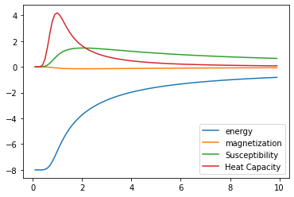

Getting Started
This page details how to get started with MonteCarlo.
Installation
To install MonteCarlo, you will need an environment with the following packages:
Python >= 3.7
Once you have these packages installed, you can install MonteCarlo in the same environment using
git clone git@github.com:CHEM-PHYS-X684/MonteCarlo.git
cd MonteCarlo
pip install -e .
Theory
Introduction to the Monte Carlo method
Start by defining the Gibbs distribution: \(P(\alpha) = e^{-E(\alpha)/kT}\). this expression, defines the probability of observing a particular configuration of spins, \(\alpha\). As you can see, the probability of observing the \(\alpha\) configuration decays exponentially with increasing energy of \(\alpha\), \(E(\alpha)\), where k is the Boltzmann constant, \(k = 1.38064852 \times 10^{-23} J/K\) and T is the temperature in Kelvin.
What defines the energy of a configuration of spins?
Given a configuration of spins (e.g., \(\uparrow\downarrow\downarrow\uparrow\downarrow\)) we can define the energy using what is referred to as an Ising Hamiltonian:
\(\displaystyle\hat{H}' = \frac{\hat{H}}{k} = -\frac{J}{k}\sum_{<ij>} s_is_j + \tfrac{\mu}{k}\sum_i s_i,\)
where, \(s_i=1\) if the \(i^{th}\) spin is up and \(s_i=-1\) if it is down, and the brackets \(<ij>\) indicate a sum over spins that are connected, and J is a constant that determines the energy scale. The energy here has been divided by the Boltzmann constant to yield units of temperature.
Properties
For any fixed state, \(\alpha\), the magnetization (M) is proportional to the _excess_ number of spins pointing up or down while the energy is given by the Hamiltonian:
\(M(\alpha) = N_{\text{up}}(\alpha) - N_{\text{down}}(\alpha)\).
As a dynamical, fluctuating system, each time you measure the magnetization, the system might be in a different state (\(\alpha\)) and so you’ll get a different number! However, we already know what the probability of measuring any particular \(\alpha\) is, so in order to compute the average magnetization, \(\left<M\right>\), we just need to multiply the magnetization of each possible configuration times the probability of it being measured, and then add them all up! \(\left<M\right> = \sum_\alpha M(\alpha)P(\alpha)\). In fact, any average value can be obtained by adding up the value of an individual configuration multiplied by it’s probability:
\(\left<E\right> = \sum_\alpha E(\alpha)P(\alpha)\).
This means that to obtain any average value (also known as an expectation value) computationally, we must compute the both the value and probability of all possible configurations. This becomes extremely expensive as the number of spins (N) increases.
Sampling
These calculation pose a drastic problem from a practical perspective. As N becomes large it is evident that computations become a daunting task if calculated in this manner. Thus a better numerical alternative would be to use a simulation to generate data over the ‘representative states’. Because each computed value of a configuration gets weighted by it’s probability, very high energy states (which have negligible probabilities due to the Boltzmann distribution) will not contribute to the overall sum. This is a form of biased sampling which essentially boils down to satisfying the following condition where generated frequency = actual probability.
An expectation value of any quantity, A, computed (using the Canonical Ensemble) can also be defined as:
\(\left<A\right> = \frac{1}{Z}\int e^{-E(\alpha)/T}A(\alpha)d\alpha\),
where Z is referred to as the partition function, and is essentially a normalization constant: \(Z = \int e^{-E(\alpha)/T}d\alpha\), and \(P(\alpha) = \frac{1}{Z}e^{-E(\alpha)/T}\). This probability gives the actual statistical weight with which the configuration \(\alpha\) occurs in the thermal equilibrium. We now want to consider the discrete case of the formal definitions above. If we are to consider a finite portion of the configuration space it would produces an average of the form:
\(\left<A\right> = \frac{\displaystyle\sum_\alpha e^{-E'(\alpha)/T}A(\alpha)}{\displaystyle\sum_\alpha e^{-E'(\alpha)/T}}\)
We could choose to randomly sample from this full set of configurations, but this will not converge quickly.
Examples
Configuration Energy
Example for how to compute the energy for a single spin configuration
import numpy as np
import matplotlib as mpl
from matplotlib import pyplot as plt
import montecarlo
import random
# Define configuration
conf = montecarlo.SpinConfig1D(N=8)
conf.set_config([0, 0, 0, 0, 0, 0, 1, 1])
ham = montecarlo.IsingHamiltonian1D(-1.0, .1)
Ei = ham.energy(conf)
print(" Energy of ", conf.config, " is ", Ei)
# Now we can use our integer-binary encoding to define a configuration
# and get the energy
conf.set_int_config(106)
print(" Index 16 = ", conf)
Ei = ham.energy(conf)
print(" Energy of ", conf.config, " is ", Ei)
This should print out the following:
Energy of [0 0 0 0 0 0 1 1] is 3.6
Index 16 = 01101010
Energy of [0 1 1 0 1 0 1 0] is -4.0
Thermodynamic for temp T
Here, we compute the average energy, magnetization, magnetic susceptability, and heat capacity for a small 6 site lattice.
import numpy as np
import matplotlib as mpl
from matplotlib import pyplot as plt
import montecarlo
import random
# Define my hamiltonian values
ham.J = -2
ham.mu = 1.1
ham.pbc = True
# Define a new configuration instance for a 6-site lattice
conf = montecarlo.SpinConfig1D(N=6)
# Compute the average values for Temperature = 1
E, M, HC, MS = ham.compute_average_values(conf, 1)
print(" E = %12.8f" %E)
print(" M = %12.8f" %M)
print(" HC = %12.8f" %HC)
print(" MS = %12.8f" %MS)
This should produce the following output:
E = -11.90432015
M = -0.02660820
HC = 0.59026994
MS = 0.05404295
Plot of observables vs T
At this point we have the ability to compute the average values of various quantities of a spin lattice at a given temperature. One is often interested in how these properties change as a function of Temperature.
# First initialize some empty lists to store our computed quantites
e_list = []
e2_list = []
m_list = []
m2_list = []
T_list = []
# Now pick some values for our hamiltonian
ham.J = -1
ham.mu = .1
conf = montecarlo.SpinConfig1D(N=8)
for Ti in range(1,100):
T = .1*Ti
E, M, HC, MS = ham.compute_average_values(conf, T)
e_list.append(E)
m_list.append(M)
e2_list.append(HC)
m2_list.append(MS)
T_list.append(T)
plt.plot(T_list, e_list, label="energy");
plt.plot(T_list, m_list, label="magnetization");
plt.plot(T_list, m2_list, label="Susceptibility");
plt.plot(T_list, e2_list, label="Heat Capacity");
plt.legend();
This should produce the following plot:
{kind=link}